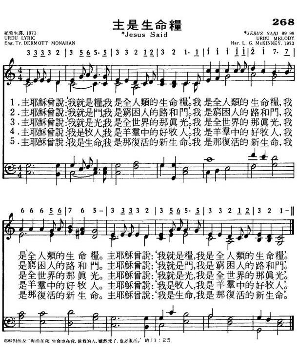

|
|
颂主新歌
268主是生命粮 |
|
|
1.主耶稣曾说：“我就是粮， |
|
https://www.mred365.cn/szxg/7271.html 
|
|
|
|
|

-

-
主是生命糧
-
Download
clip as an MP3
-
Printable scores: PDF
Audio files: MIDI, Recording
-
主是生命糧 (Jesus
Said)
[Midi]
-
Jesus the Lord said, I am the bread
Urdu Lyric and Melody
印度歌曲
JESUS SAID
(Jesus
the Lord Said, "I Am the Bread")
(主是生命糧)
0268
調名:
JESUS SAID
YISU NE KAHA
Urdu melody
https://hymnary.org/tune/yisu_ne_kaha_urdu
Jesus the Lord Said, "I Am the Bread"
Translator:
Hymn Information
Scripture References
- ·
Thematically related:
- st. 1 =
- st. 2 =
- st. 3 =
- st. 4 =
- st. 5 =
- st. 6 =
- st. 7 =
Further Reflections on Scripture References
Based on the “I Am” sayings of Christ in the Gospel of John, this text lends itself to worship that is either quietly meditative or joyfully expressive – or both!
Sing! A New Creation
Confessions and Statements of Faith References
Further Reflections on Confessions and Statements of Faith References
Before singing this song, consider reading Heidelberg Catechism, Lord’s Day 7, Question and Answer 20: “Only those are saved who through true faith are grafted into Christ and accept all his benefits.”
Additionally, Heidelberg Catechism, Lord’s Day 11, Question and Answer 30 says, “Either Jesus is not a perfect savior, or those who in true faith accept this savior have in him all they need for their salvation.”
Hymn Story/Background
Author Information
Composer Information
Musical Suggestion
L01C
印度
India
教會詩歌
聖詩(2009)
印度（India）擁有亞洲最古老之文化之一，文化上大致分成南北兩大差異。
南方Dravidian
保留較古老傳統，以卡那迪（Karnatic）音樂為代表；北部於主前
1500
年因西北方Aryan
文化的進入而構成甚大的對比，以Hindi
音樂為代表。
印度面積廣大，接近台灣的83
倍，人口有十一億六千餘萬，其中有74％說
Indo-Aryan
語，24％講Dravidian
語，全國共計1,625
種方言中除英語外還有14
種為官方語言（Hindi 41%、Bengali
8.1%、Telugu
7.2%、Marathi
7%、Tamil
5.9%、
Urdu 5%、Gujarati
4.5%、Kannada
3.7%、Malayalam
3.2%、Oriya
3.2%、Punjabi
2.8%、Assamese
1.3%、Maithili
1.2%、其他5.9%），宗教信仰則有80.5%信奉印
度教、13.4%回教、基督教只有2.3%、錫克教1.9%。
（https://www.cia.gov/library/publications/the-world-factbook/geos/IN.html;
Accessed 17 June 2009）。自16
世紀葡萄牙、荷蘭與法國就陸續佔領印度市場，
英國則在19
世紀中葉就控制全國，印度成為英國的殖民地，1947
年才獨立，但
北部以回教為主的巴基斯坦同年從印度分裂而成立巴基斯坦國，後來東巴基斯坦
又分裂成孟加拉國。